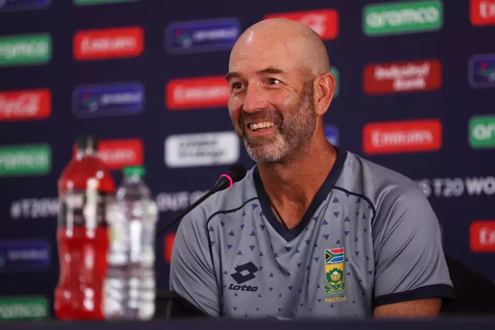
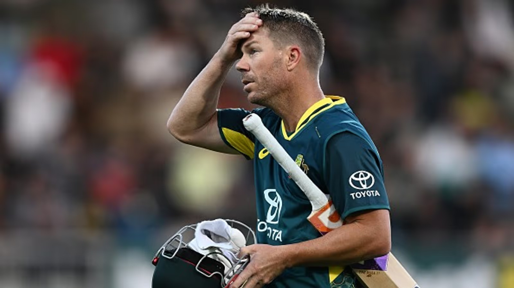
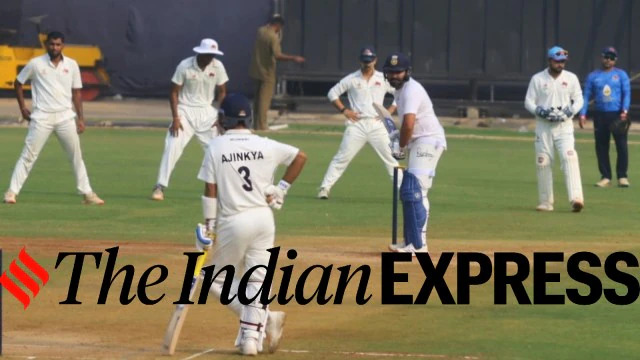

The Cricket News
-

Rob Walter’s dedication as South Africa's cricket coach shines through his early starts to watch
games live from New Zealand. Balancing player development, franchise commitments, and results,
he faces tough decisions and criticism. Despite inconsistent performances, Walter prioritizes
long-term growth, fostering competition and preparing the squad for major tournaments.
cricbuzz
-

The 10th PSL draft, held on January 13 at Lahore Fort, featured 116 players from 10 countries.
Lahore Qalandars picked Daryl Mitchell, while Karachi Kings signed David Warner and Kane Williamson.
US wicketkeeper Andries Gous was also selected. The tournament runs from April 8 to May 19, 2025.
sportstalk
-

Indian captain Rohit Sharma will join Mumbai's Ranji Trophy practice at Wankhede Stadium on Tuesday.
Preparing for the Champions Trophy, he resumed training at MCA-BKC. While practicing with the team,
his participation in the game against Jammu & Kashmir remains undecided. Sharma last played Ranji in
2015 against Uttar Pradesh.
indianexpress